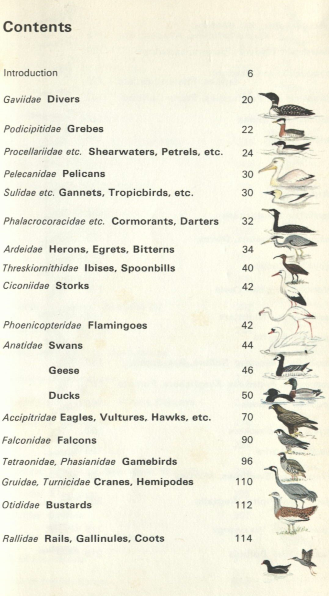

printed things I like
published 2025-01-27
Just a small collection of cards/maps/misc. that I have collected and like.

this was from the table of contents in a bird identification book I came across.
I like the density of information for quick reference; scientific name|English name|drawing.
 business card from the tattoo shop I go to. an homage to cards by those who started it all. I like the color used, how the text makes you look it all over
business card from the tattoo shop I go to. an homage to cards by those who started it all. I like the color used, how the text makes you look it all over
 A map for the city of Iwakuni, Japan. given to me from a colleague who visited.
A map for the city of Iwakuni, Japan. given to me from a colleague who visited.
 back of the map, noting the area around the Kintai Bridge, a sightseeing destination. I like the callout and explanation of the intersection.
back of the map, noting the area around the Kintai Bridge, a sightseeing destination. I like the callout and explanation of the intersection.

 A tube map of the London Underground, May 2014.
A tube map of the London Underground, May 2014.
High density, plenty of informaation. Exactly what a transit map should be.
see the most recent map here. They added some nuaced symbols to the station list.
Though, they seemed to remove the credit given to Harry Beck, who designed the origninal map this was based on in 1931